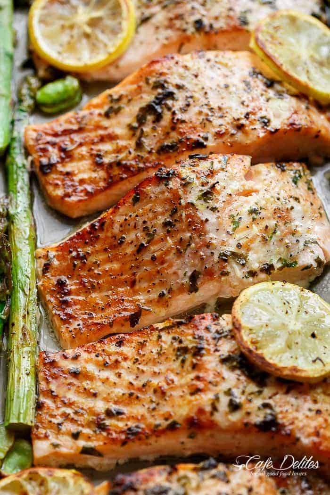

one pan lemon garlic salmon + asparagus

Simple and easy salmon and asparagus recipe for a healthy and tasty meal baked in only 10 minutes!
Ingredients
- 4-6 (6oz) salmon fillets, skin removed.
- 2tablespoons minced garlic
- 2 tablespoons fresh chopped parsley
- 1/3 cup freshly squeezed lemon juice
- Olive oil cooking spray
- 1 teaspoon Kosher salt
- 1/2 teaspoon cracked black pepper
- 4 bunches of asparagus, with hard bases removed
- 1 lemon sliced to garnish
- 1/3 cup beans/peas or any other greens
Instructions
- Preheat oven broiler (or grill) to high heat. Line a baking sheat with aluminum foil. Arrange oven shelf to the second top shelf (about 8-inches from the heating element).
- Place the salmon on a large baking tray. Rub each fillet evenly with the garlic and parsley to evenly coat; pour over the lemon juice. Spray with a light coating of olive oil spray and season with salt and pepper. Arrange the asparagus and greens around the salmon in a single layer, and place the lemon slices over the top.
- Broil (or grill) for 8-10 minutes, or until salmon is cooked through to your liking.
- Serve on a plate and enjoy!